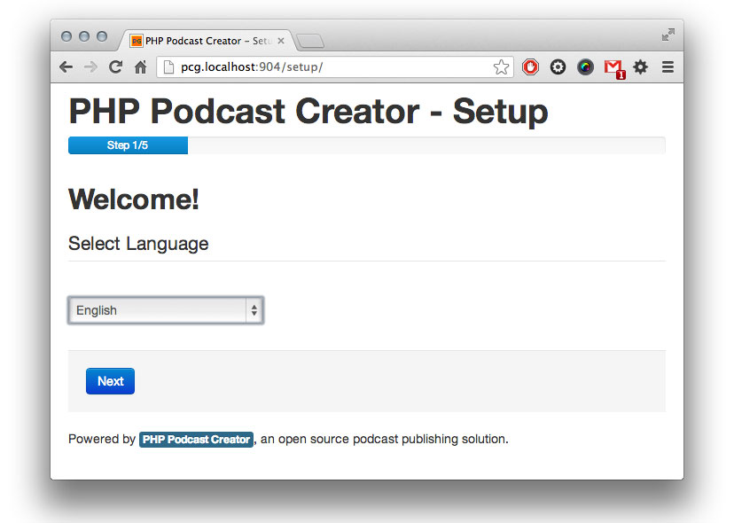
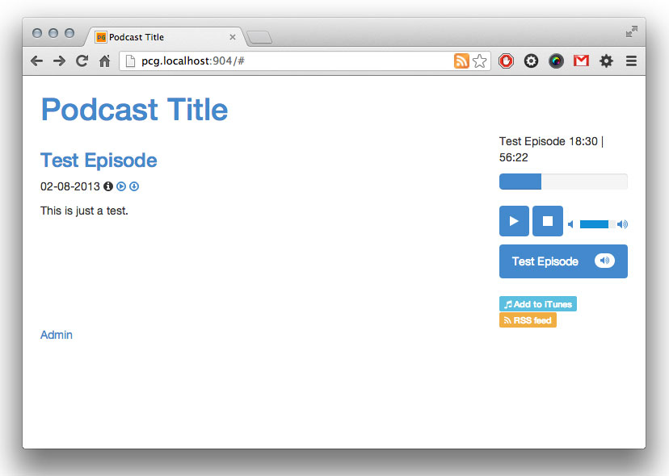
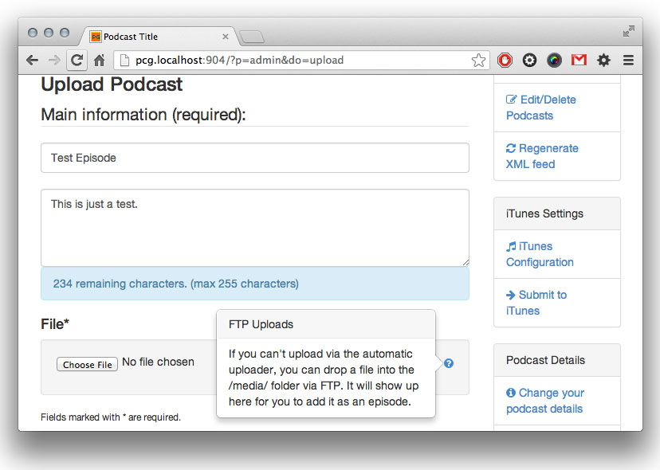
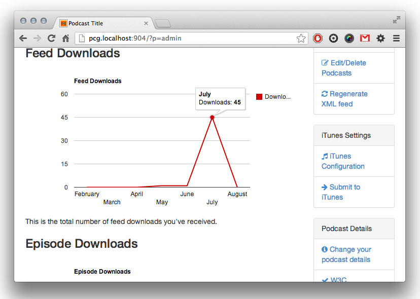

About PHP Podcast Creator
PHP Podcast Creator is an unofficial fork of Podcast Generator version 1.4. In many ways, it is an upgrade of version 1.4. PHP Podcast Creator (PPC) embraces all of the thinking of the modern web, including embracing HTML5, CSS3, and HTML5 audio/video players. It uses recent open-source projects as the framework, including Twitter Bootstrap 3, jQuery, jPlayer and updated versions of tinyMCE for use as a rich text editor. It takes a philosophically different approach to programming, dramatically reducing the amount of files and dependencies for cleaner, easier-to-maintain code. While it still does utilize a mySQL-less approach to storing and retrieving episodes, this functionality will be removed in later editions and rely on mySQL for data storage. It already utilizes mySQL for tracking episode and feed downloads.
However, in some ways, some may consider this a downgrade from Podcast Generator 1.4. Many components were removed in the interest of fewer dependencies, including freebox (which made it easy to modify items in the right-hand menu), categories (it is not possible to categorize podcasts in PPC), archives (this will be making a return to PPC when it makes the leap to mySQL), and multiple themes.
If you know PHP, CSS and HTML, you'll be able to modify this project all you want and make it your own.
Why would I choose PHP Podcast Creator over Podcast Generator?
With Podcast Generator moving to version 2, there may be less of an incentive to move on to PHP Podcast Creator. They share some similarities now, like utilizing Bootstrap for theming and UI. PPC offers new whiz-bang features like HTML5 media players and download tracking, but PG offers easier out-of-the-box customization with options like freebox and categories. I would encourage you to download both options, try them out, and check out the code that drives them before making your decision.
Features
Shared with Podcast Generator
- Very easy to install (Web Setup Wizard) - Just load up website and PPC does the rest of the installation for you. For more information, see the Installation section.
- Free and open source - It's free. It always will be. If you really want to buy me a beer for me troubles, I won't stop you.
- Supports ANY media filetype (mp3, ogg, mpg, m4v, mov, pdf, etc...) and allows to create mixed audio and video podcasts - I would recommend only using MP3 and MP4, but it does support other media types.
- The XML feed is fully compatible with aggregators (e.g. Juice and iTunes), meets the w3c standards and supports iTunes specific tags - However your listeners want to subscribe, they'll be able to.
- User friendly web administration interface - upload, edit, delete episodes. You can also edit your feed information and make some modifications to your website.
- Multilanguage support - Any help translating the new additions would be appreciated!
- Web player - It utilizes jPlayer for the web player, so it'll play audio and video, on all devices (as long as the mobile device supports the codec you used in your media)
- Easy FTP support for episodes too large to upload via HTTP. You can upload via FTP and add the media to your feed if it's too large for HTTP uploads.
New Features:
- HTML5 progress uploads (compatible with modern [not IE] browsers) - Get feedback on the percentage uploaded and remaining.
- HTML5 audio/video player (jPlayer) - It plays the most common formats necessary for today (MP3, MP4, M4V)
- Significant structural changes that make updates and upgrades easier. Mass file deletion and combining means this will be easier and faster to modify.
- Clean URLs using URL rewrites - Clean up those dynamic URLs, help with SEO and ease of passing links around to friends.
- Feed download tracking - Every time an episode is downloaded, it tracks IP address, host, time and referrer.
- Episode download tracking - Each time your feed is pinged, it tracks the person or program pinging it. Tracking information is displayed in a beautiful graph from Google Chart APIs.
- mySQL integration (currently only for feed tracking). mySQL will be utilized for episode information soon as well, but for now it's only used for download tracking.
- Bootstrap 3 integration for mobile-first compatibility - Cutting edge integration with modern web frameworks, like Bootstrap. Of course your podcast website will work on all devices and is responsive.

The setup.
Quick and easy web-based wizard.

The Homepage.
A blank slate, easy to make your own with CSS.

Upload.
With inline error checking, HTML5 file property functions and more.

Download tracking.
Monitor both episode and feed downloads with these easy graphs.
Installation
I tried to make it as easy as possible for ya.
- Upload all the files to your root directory.
- Create a "media" and "images" folder in your root directory.
- CHMOD your root directory, "media" and "images" folder to 755.
- Download jPlayer (http://jplayer.org/) and put it in /components/player (so the structure should be /components/player/jquery.player.min.js).
- Download tinyMCE (http://www.tinymce.com/) and extract it into /components/tinymce (so the structure should be /components/tinymce/js/tinymce/jquery.tinymce.min.js).
- Set up your database in whatever tool you're most comfortable with. Keep your username, password and database information handy.
- Load up your website in your favorite browser. Walk through the installation steps.
- Log into your admin panel using the username and password you set up when you installed.
- Delete your /setup folder. It's a security risk. Please delete it. PLEASE.
- Finish configuring. Set up your iTunes categories and images, set up your title, copyright, etc., and you should be ready to rock and roll.
Upgrading
If you want to upgrade from Podcast Generator, it shouldn't really be THAT difficult. This is untested, as I do not have a site running PG 1.4 to test, but you should just need to go through the following steps:
- Make a backup. This is probably the most important step. Please don't complain if you lose everything if you didn't follow this step.
- Delete a bunch of stuff. Scary, I know, but delete everything other than config.php and the stuff in your /media folder.
- Reinstall. Rename your "config.php" file to "config.bk.php". Load up your site and walk through the installation wizard.
- Follow the standard install instructions to complete your installation. Log into your site.
- Remake your config.php file by logging into the admin panel, and go to PHP Podcast Generator Config, as well as iTunes config. If you've forgotten anything that you'd set up previously, you can look it up in your "config.bk.php" file (you kept that, right?!)
- That's IT! You should be done. Your theme won't transfer over unfortunately, so you'll need to start from scratch there, but since you're moving to a responsive site and fantastic framework, you'll probably want to rethink your layout anyway.
If you're moving from PG to PPC and want to email me with tips and tricks, I welcome your input.